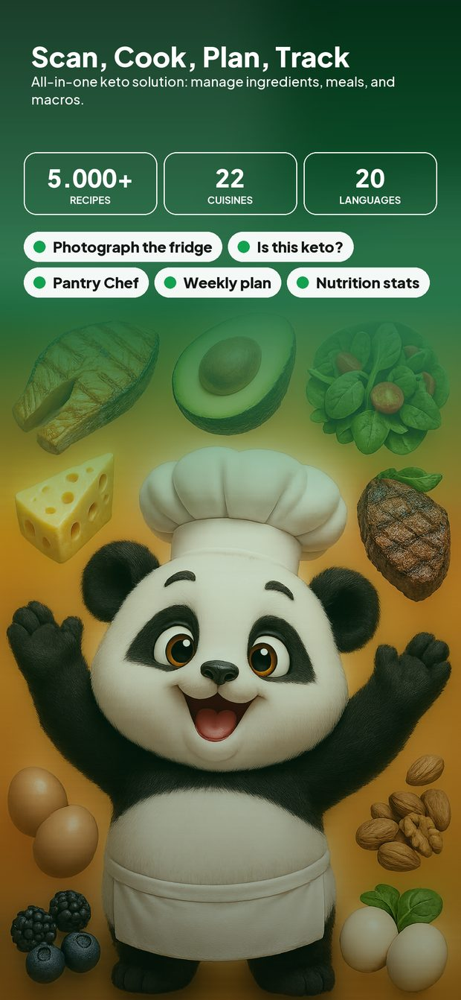
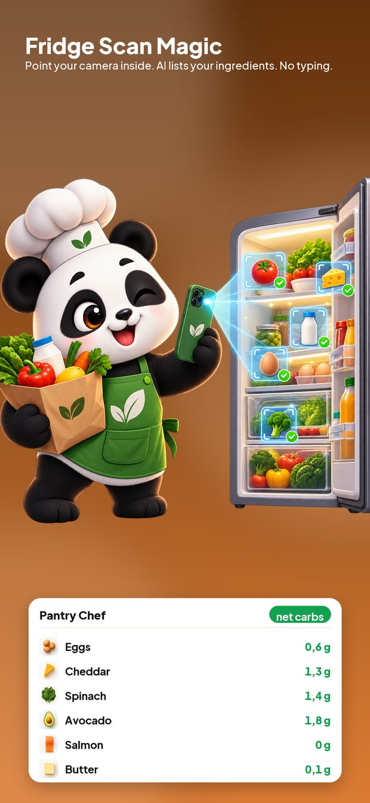
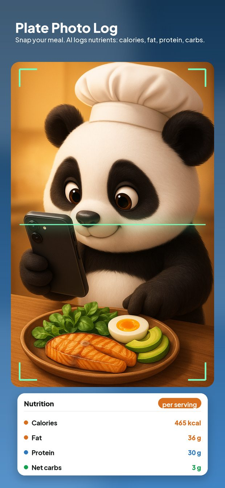
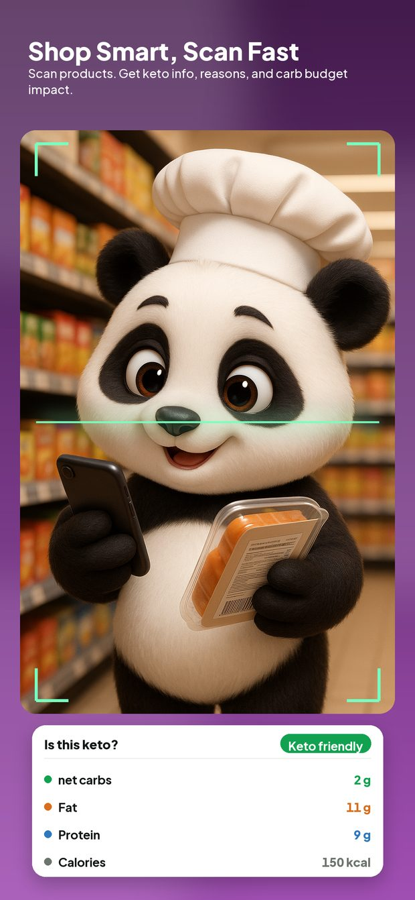
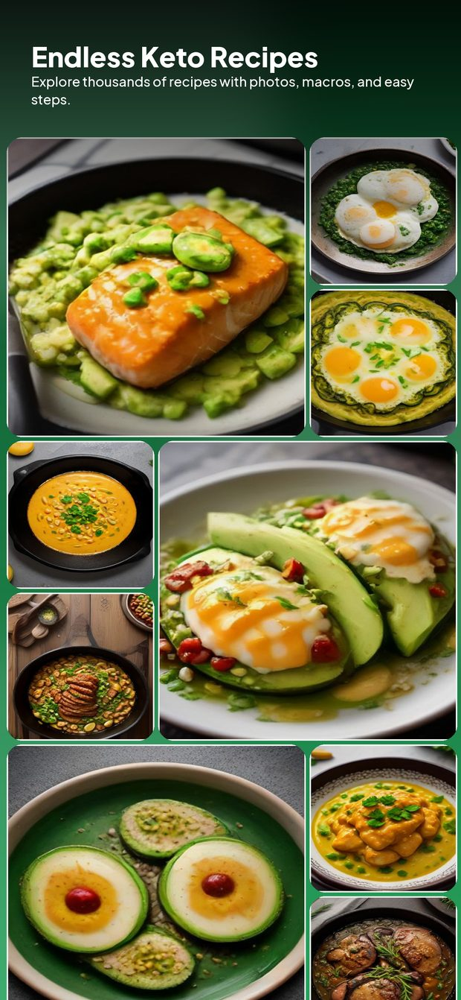
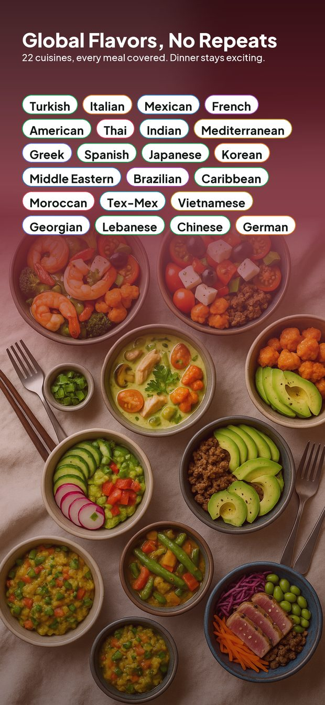
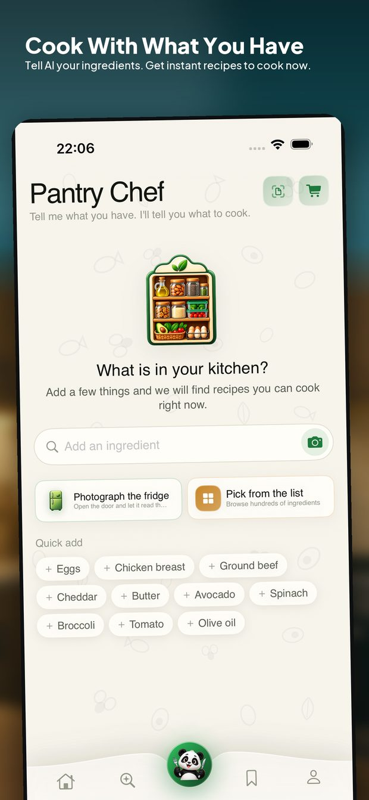
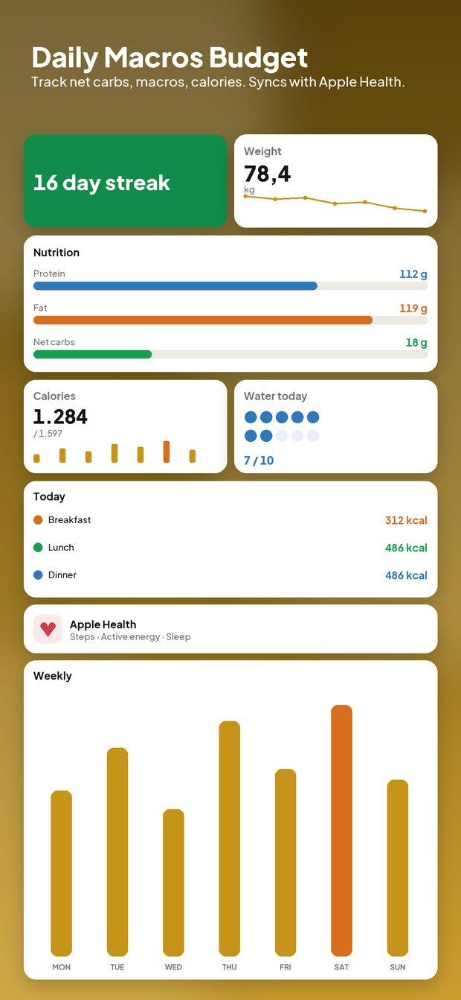
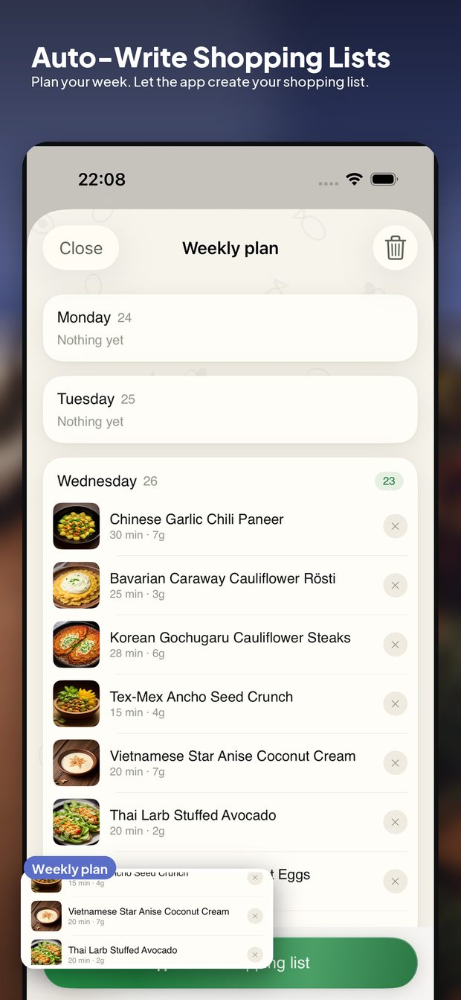
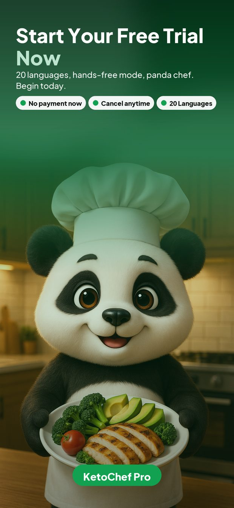

KetoChef
Point your camera at your fridge, your plate, or any product label — KetoChef reads it, does the carb maths, and hands you something to cook from 5,000+ keto recipes.
How it works
Most keto apps ask you to type every gram. This one looks instead.
1
A fridge shelf, a cupboard, a bag of shopping. Everything recognisable lands in your pantry with its carb count attached.
2
Pantry Chef reads what you actually have and writes a keto recipe around it — or pick one of 5,000+ from the catalogue.
3
One photo logs the dish, the portion and the macros. Your net carb budget updates without you counting anything.
What it does
Built around the three questions that come up every day: what's in my kitchen, what am I eating, and can I have this?
Photograph a shelf or a counter. Every ingredient is recognised and added to your pantry — no typing.
One photo of a meal returns the dishes, the portions, and the calories and macros, logged to your day.
In a shop, photograph the nutrition panel. You get a straight yes or no, the net carbs, and the reason.
Filtered by net carbs, cuisine, allergens and time, each with step-by-step cook mode and a timer.
Pantry Chef builds a keto recipe out of the ingredients already in your kitchen, instead of sending you shopping.
Drop recipes onto days, get a combined shopping list, and see the week's carbs before you cook it.
A daily budget you can actually read, plus water, electrolytes and weight — the things that make keto feel fine.
Steps, active energy and weight sync both ways, so your day adds up across every app you already use.
Recipes, ingredients and the whole interface — including the AI answers — in your own language.
A look inside
Swipe to browse.










Free and Pro
The catalogue, the weekly plan and the tracking are open to everyone. Pro lifts the limits on the parts that call our AI.
Weekly, monthly and yearly plans, each starting with a free trial. Prices are shown in your own currency inside the app.
Free accounts get four full recipes a day, the weekly meal plan, all tracking, and three tries of each AI scan.
Worldwide
Not just the buttons — recipes, ingredient names, cooking steps and the AI's answers are all written in the language you pick.
Support
Write to us and a person will answer. Please include your device model, your iOS version, and what you were doing when it went wrong — it usually saves a round of questions.
Your data
Short version: your food, not your identity.
A scanned photo is sent for analysis and discarded. We store the result — the ingredients or the macros — not the picture.
There are no ads and no advertising identifier, so iOS never has to ask you for tracking permission.
Profile → Delete account removes your recipes, pantry, plan and logs from our servers. No email to us required.
The full detail is in the Privacy Policy.
FAQ
The questions that reach us most often.
Subscriptions are billed by Apple, so they are cancelled in the App Store — not in KetoChef. On your iPhone: Settings → your name → Subscriptions → KetoChef → Cancel Subscription. You keep Pro until the end of the period you already paid for.
Open Profile → Restore purchases. Make sure you are signed in with the same Apple Account you paid with, and with the same KetoChef account. If it still doesn't appear, email us and we will fix it on our side.
Not during the trial. Apple charges when the trial ends unless you cancel at least 24 hours before. The trial is offered once per Apple Account across all KetoChef plans.
In the app: Profile → Delete account. This removes your recipes, favourites, pantry, plan and logs from our servers. It cannot be undone, and it does not cancel a subscription — cancel that in the App Store first.
Recipes you have opened recently are cached and stay readable offline, including cook mode. Anything that uses the camera or AI — fridge scans, plate scans, label checks — needs a connection, because the analysis happens on our servers.
They are estimates. Photo recognition guesses portions, and packaged foods vary by country and batch. Use them to steer your day, not as a clinical measurement.
No. KetoChef is a cooking and tracking app, not a medical device, and nothing in it is a diagnosis or a treatment. If you are pregnant, taking medication — insulin and blood-pressure drugs especially — or living with a chronic condition, talk to your doctor before changing how you eat.
We are fixing something on our side and everyone sees that screen. Nothing you saved is lost, and the app returns on its own when the work is done — you don't need to reinstall it.